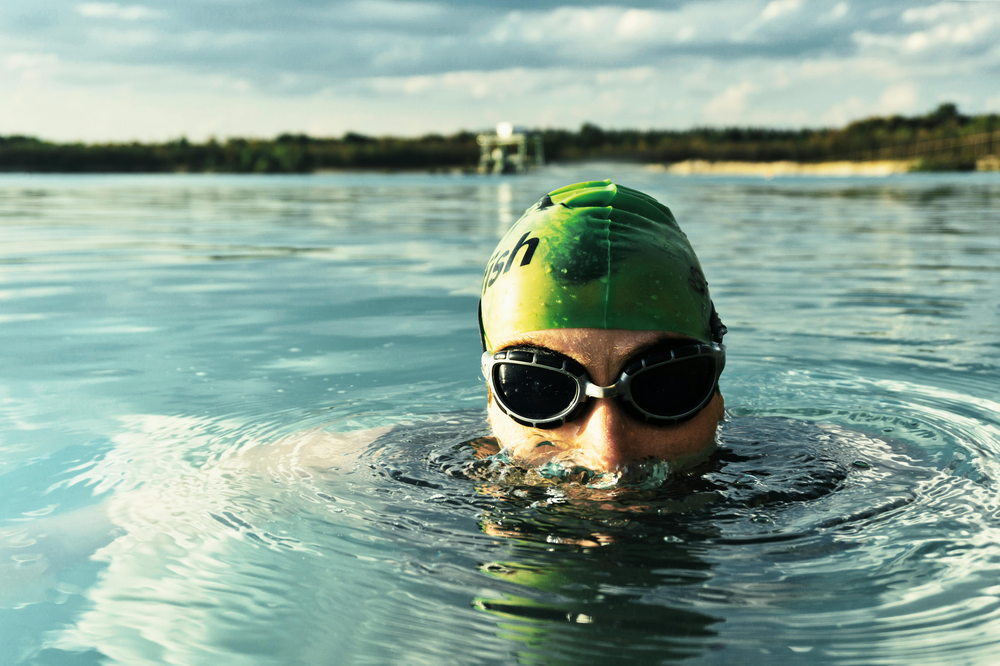
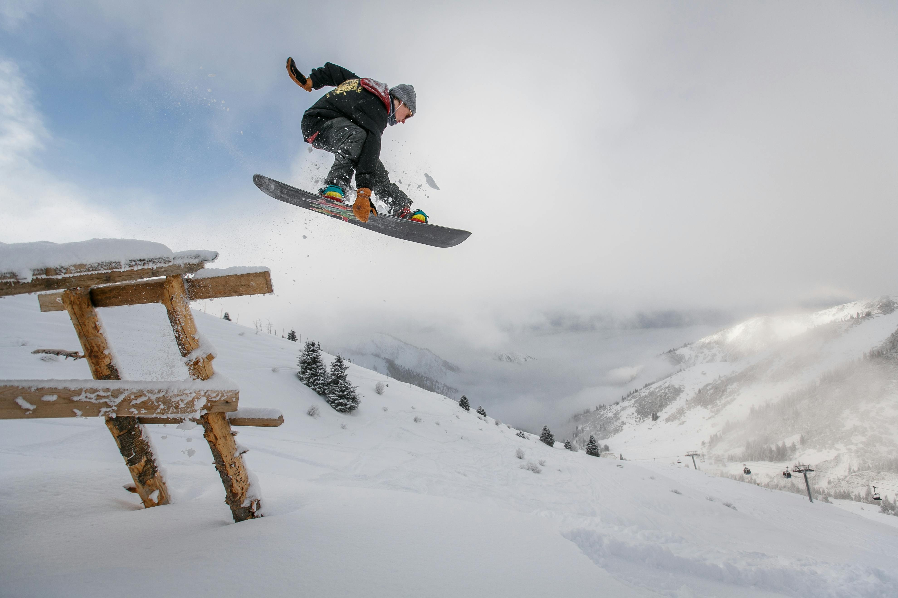

EXPLORE

Biking
Biking is an excellent way to improve both physical and mental well-being. It provides a great cardiovascular workout, strengthens muscles, and promotes joint health while being low-impact. Biking is also eco-friendly, reducing carbon emissions and minimizing traffic congestion. Additionally, it offers a sense of freedom, allowing riders to explore their surroundings, enjoy nature, and reduce stress, making it a perfect blend of exercise and recreation.

Swimming
Swimming is a fantastic full-body workout that improves cardiovascular health, builds strength, and increases flexibility, and at the same time is gentle on the joints. It’s suitable for people of all fitness levels and provides a refreshing way to stay active. Swimming also helps relieve stress, improve mood, and boost endurance. It is also an excellent way to enjoy nature, whether at a pool, lake, or ocean.
